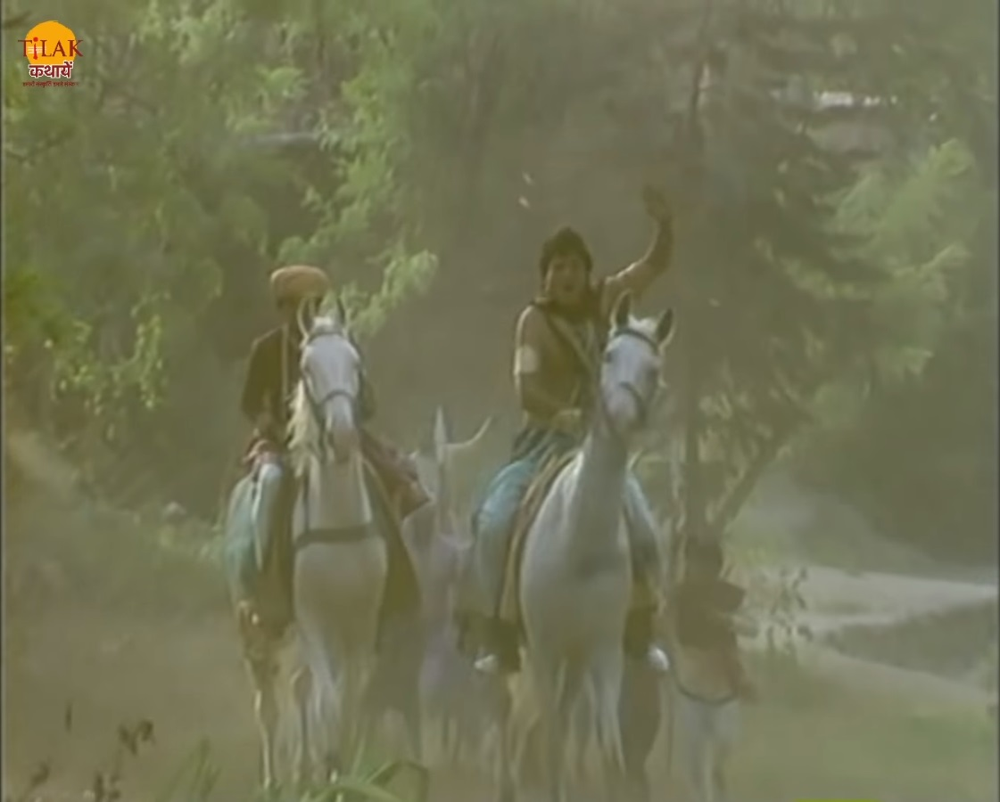
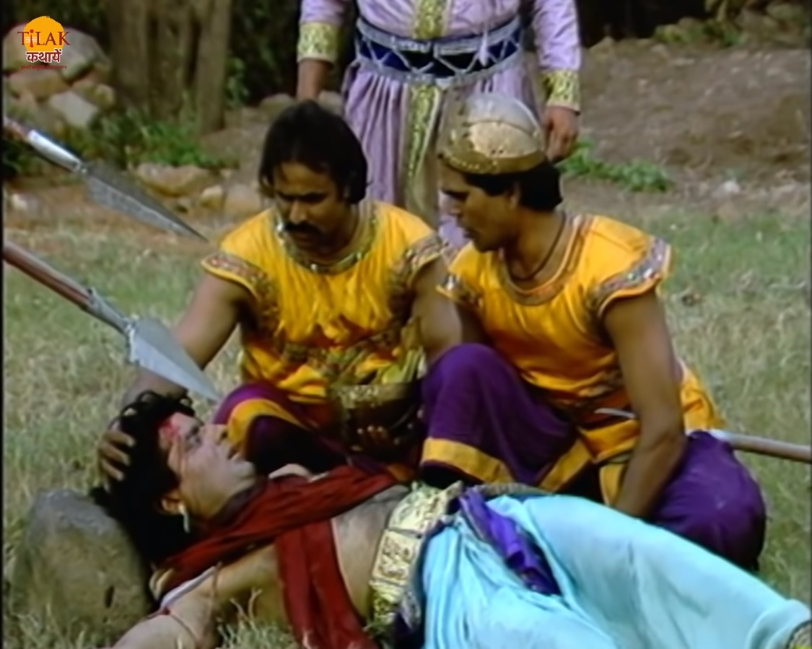
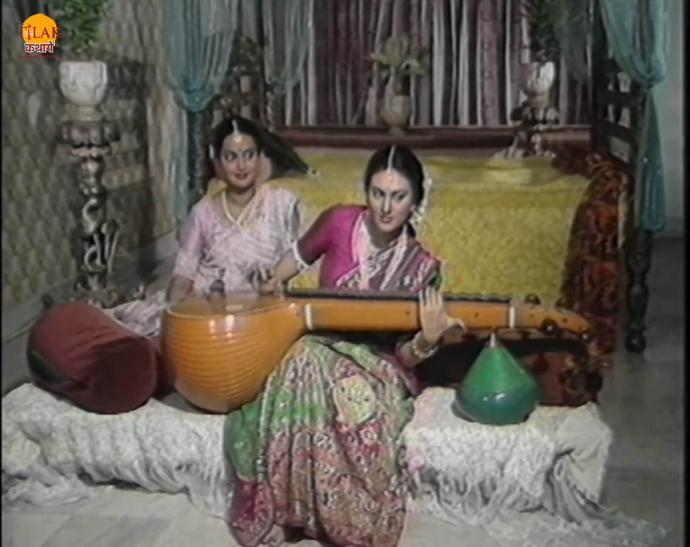
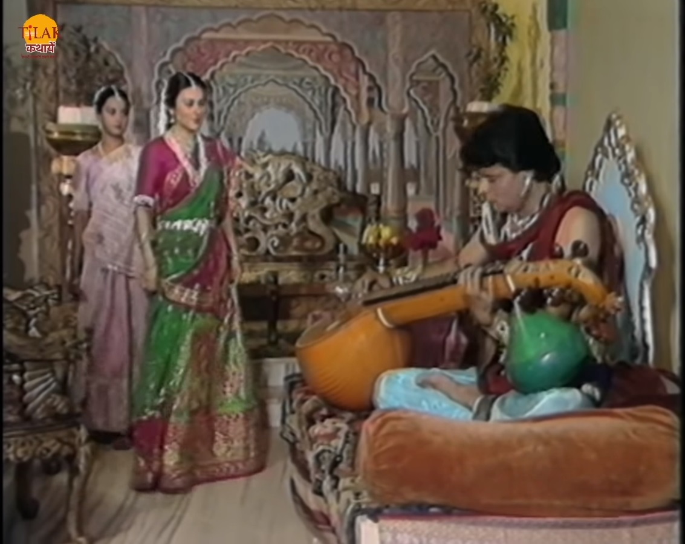
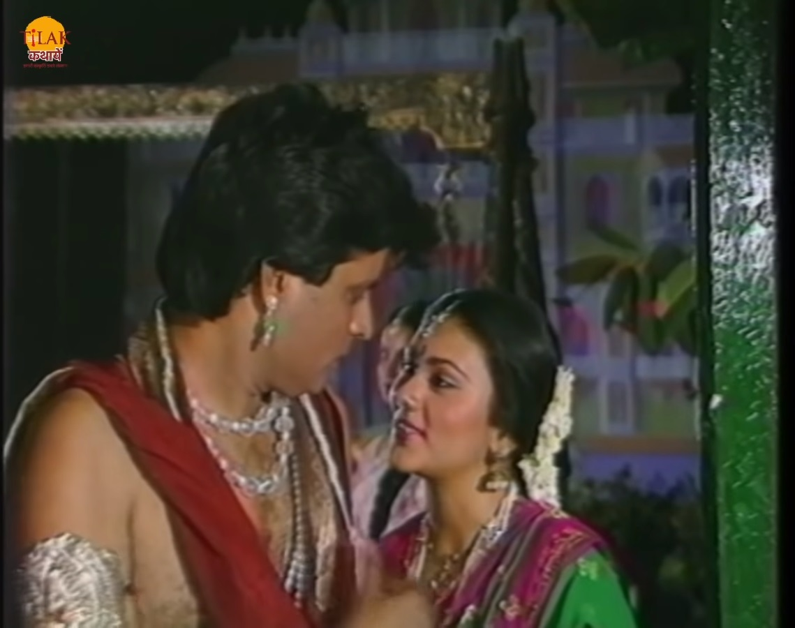
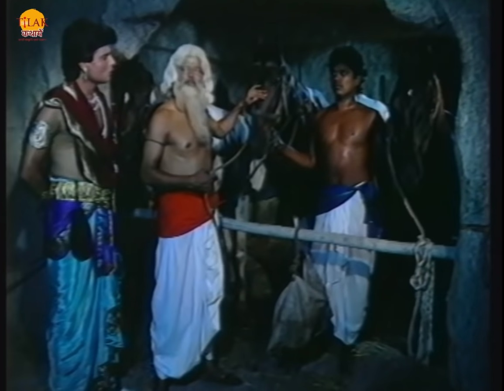

विक्रम और बेताल भाग 20 - आनंदसेन और रूपवती की प्रेम कथा


बेताल विक्रम को फिर से एक नयी कहानी सुनता है ताकि वो अपनी शर्त के मुताबिक़ उसे बोलने पर मजबूर कर सके। इस बार बेताल विक्रम को चंदरपुर के युवराज आनंदसेन की कहानी सुनाता है।आनंदसेन को शिकार करने का शोक था एक दिन वो अपने सैनिकों के साथ शिकार करने जाता है तो तूफ़ान की चपेट में आने से वो भटक जाता है और पत्थर से सर टकराने की वजह से बेहोश हो जाता है। आनंदसेन अपने राज्य से बाहर निकल गया था और अवंतीपुर की सीमा में आ जाता है। अवंतीपुर के सैनिक उसे होश में लाकर राजा के पास ले जाते है तो अवंतीपुर के राजा धर्मवीर उसके बारे में सुन उसे बताता है की उसके पिता उसके परम मित्र हैं और वो उनके सही सलामत होने की खबर उनके पिता तक पहुँचा देंगे। राजा धर्मवीर आनंदसेन को कुछ दिन के लिए अपना अतिथि बना लेता है।


आनंदसेन सेवा का आनंद उठता भोजन करता और सो जाता। एक दिन उसे मंदिर से गाने की आवाज़ आती है तो वो मंदिर में जाता है वहाँ उसे राजा धर्मवीर की बेटी रूपवती मिलता है जिसे देख कर वो मोहित हो जाता है। राजा दोनों का एक दूसरे से परिचय कराता है। आनंदसेन रूपवती के ख़यालों में खो जाता है। राजकुमार का मन वीना बजाने का करता है तो वो वीणा माँगता है। सेवक राजकुमारी रूपवती से वीना माँगकर लता है और युवराज आनंदसेन को दे देता है। आनंदसेन वीणा को बजाता है तो उसके मधुर संगीत को सुनकर राजकुमार उनके पास आजाती है। आनंदसेन अपने प्रेम को रूपवती के सामने प्रकट कर देता है। राजकुमार आनंदसेन राजा धर्मवीर से उनकी बेटी का हाथ माँग लेता है। राजा आनंदसेन को कहता है की वो उनका प्रस्ताव स्वीकार नहीं कर सकते क्योंकि उन्होंने कुछ दिन पहले ही सुंदर नगर के राजकुमार के साथ उसका रिश्ता तय कर दिया है और वो वचन नहीं तोड़ सकते। राजा अफ़सोस के साथ अनांदसेन का प्रस्ताव अस्वीकार कर देता है। राजकुमार आनंदसेन राजकुमारी रूपवती को सब बताता है तो राजकुमार और वो एक दूसरे से दूर नहीं होना चाहते थे। आनंदसेन राजकुमारी को अपने साथ भगा ले जाने की बात करता है तो रूपवती उसकी बात मान लेती है।राजकुमार उसे वहाँ से भागने का समय और जाग बता देता है और उससे घोड़े के व्यापारी हरी बाबा का पता लेकर घोड़ा ख़रीदने जाता है। घोड़े का व्यापारी हरी बाबा आनंद सेन को दो घोड़े दिखता है एक बूढ़ा था और एक जवान। व्यापारी अनांद सेन को जवान घोड़े की क़ीमत 50 मोहरे बताता है और बूढ़े घोड़े की 100 मोहरे बताता है।


राजकुमार इसका कारण पूछता है तो व्यापारी बताता है की बूढ़ा घोड़ा एक बार दोड़ेगा तो अपने स्थान पर जाकर ही रुकेगा और ये जवान घोड़ा जहां भी पनि दिखेगा वही रुक जाएगा क्योंकि ये पानी से डरता है।आनंद सेन उसके पानी से डरने का कारण पूछता है तो हरी बाबा बताते हैं की एक बार इस घोड़े की परनानी पानी से डार गयी और यही गुण उसकी नानी में भी आगया और यह पानी का डर इसकी माँ में भी आ गया था। और अब ये भी पानी से डरने लगा है। आनंदसेन वहीं खड़ा होकर कुछ सोचता है और हरी बाबा को 100 मोहरे देकर बूढ़ा घोड़ा ख़रीद लेता है। आनंदसेन घोड़े पर बैठ कर बिना राजकुमारी रूपवती को लिए सीधे अपने राज्य में चला जाता है और रूपवती वहैं इतनज़ार करती हुई रह जाती है। अब बेताल विक्रम से पूछता है की राजा ये बता की आनंदसेन रूपवती को क्यों साथ नहीं ले गया। विक्रम बेताल को बताता है की राजकुमार आनंदसेन ने घोड़े की परनानी के गुण उसकी नानी से लेकर उसकी माँ तक आने के बारे में सुना और वही गुण फिर उस घोड़े में भी आ गए तो उसे समझ में आ गया की आज राजकुमारी रूपवती अपने पिता की इज्जत और प्रेम को भूल कर उसके साथ भागने को तैयार हो गयी है तो कल को यादि उसकी बेटी भी ऐसा करेगी तो उस पर क्या बीतेगी इसलिए वो राजा धर्मवीर की इज्जत को बचाने के लिए अकेले ही अपने राज्य निकल गया।